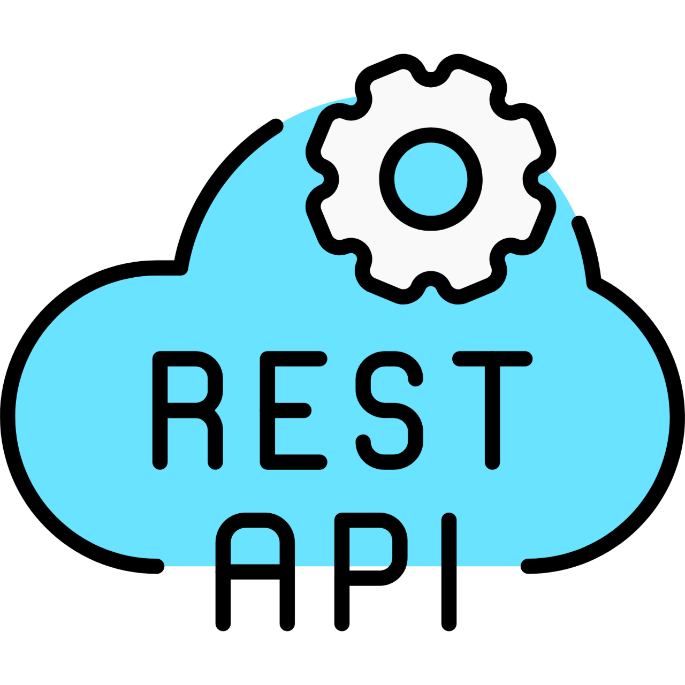
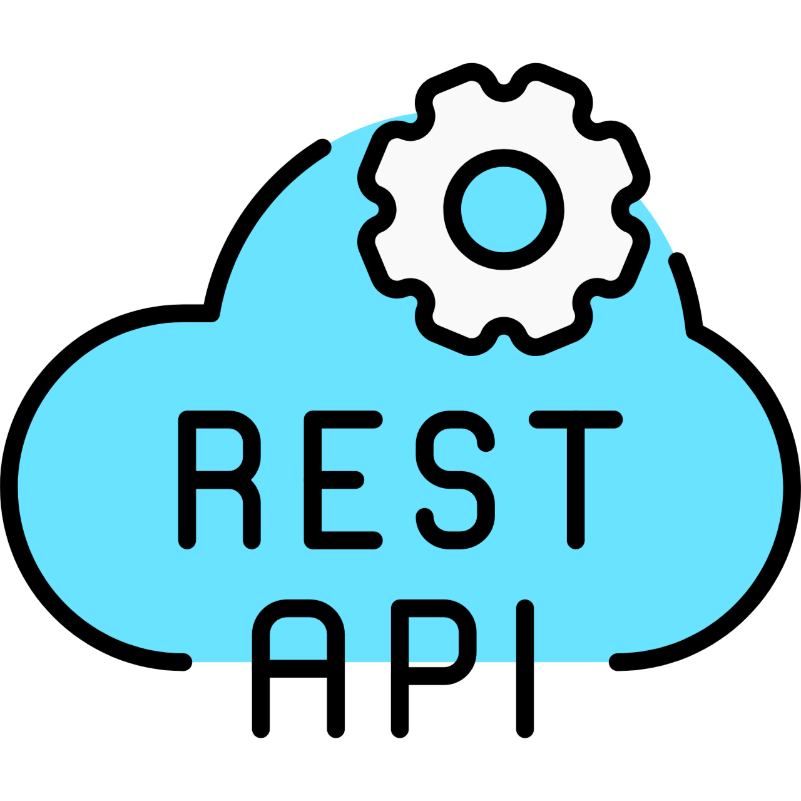

Full Stack Developer
2024-current
Focused on building and maintaining backend systems, implementing server-side logic, managing databases, and developing RESTful APIs to support web applications.


 


Hi, I'm a Full Stack Developer with a strong focus on backend technologies, specializing in building scalable, high-performance web applications. I work primarily with Node.js, Express.js, and PostgreSQL to create robust server-side systems and efficient RESTful APIs.
On the frontend, I design and develop responsive user interfaces with React and TypeScript, ensuring seamless integration between client and server components.
I’ve worked on projects such as an inventory management system that tracks products, their movement, and pricing across departments, and a customized internal ticketing solution that enhances workflow and support requests across teams. These projects have allowed me to refine my skills in database architecture, API development, and building systems that are both user-centric and reliable.
My tech stack includes HTML, CSS, JavaScript, React, Node.js, Express.js, PostgreSQL, MongoDB, and Git. I’m committed to writing clean, maintainable code and building systems that scale efficiently while addressing real-world challenges.
I’m always eager to learn new tools and techniques to further optimize my development process and create high-quality solutions.
Focused on building and maintaining backend systems, implementing server-side logic, managing databases, and developing RESTful APIs to support web applications.
Focused on building and maintaining backend systems, implementing server-side logic, managing databases, and developing RESTful APIs to support web applications.
Assisted in backend development processes, gaining hands-on experience with web technologies, database interactions, and collaborating within a development team.